This talk explores how to share interests while preserving privacy. Solving this problem enables new forms of collaboration and enhances old ones.
There are two approaches to this issue: one from a cryptographer’s vantage point and the other from a software designer’s view. One is dealing with the distribution of entropy, the other the manifestation of Human goals and ideals.
This presentation lies somewhere in-between the two. The focus is on a set of tools and techniques that can be implemented on today’s platforms. Much of the cryptography that plugs into this structure is over 10 years old. Many of the applications that benefits from this structure have already been built. Of course the potential of privately sharing interests is huge. It is easy to see how new forms of collaboration will arise from this technology.
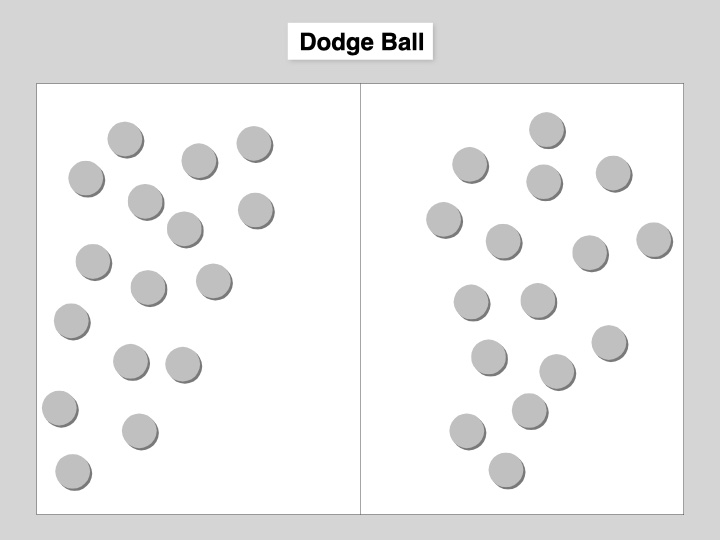
First Lets start off with an analogy from a children's game called dodge ball. Here, two teams are split into two sides of an indoor court. A number of soft rubber balls are thrown back and forth between sides. (In the figure, the gray dots represent people, not balls).
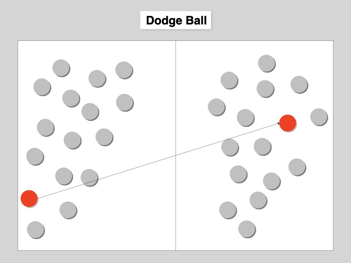
Here, a person on the left, throws a ball to the person on the right. If the person on the right doesn’t catch the ball ...
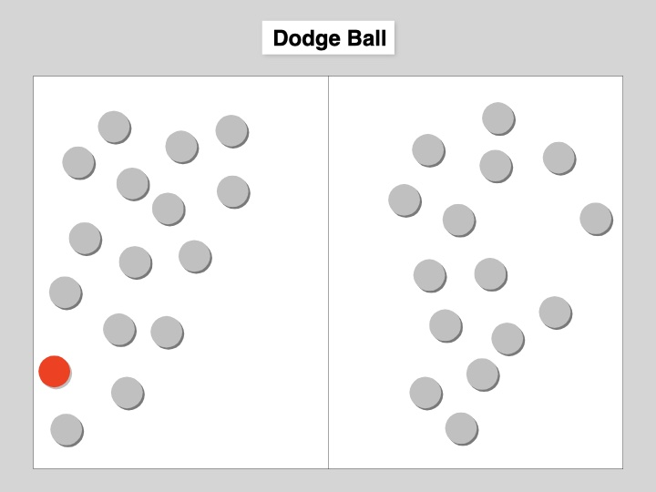
Then she leaves the game. However, if the person on the right catches the ball ...
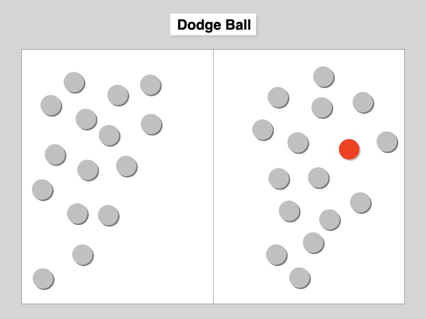
The the one throwing the ball leaves the game. After a while most everyone has left the game. The team with the last remaining players wins. Now, let’s change the rules a bit so that no one leaves the game.
Here, everyone is expected to catch the ball. Instead of someone leaving the game, the person who catches the ball moves laterally---in the direction that the ball came from. So, when one player throws the ball to another player--she catches it, figures out what direction it came from...
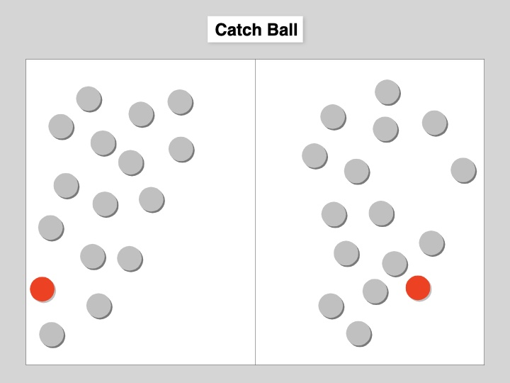
And moves to her left to be more in line with where the ball is coming from. (She didn’t move closer to the center to prevent crowding).
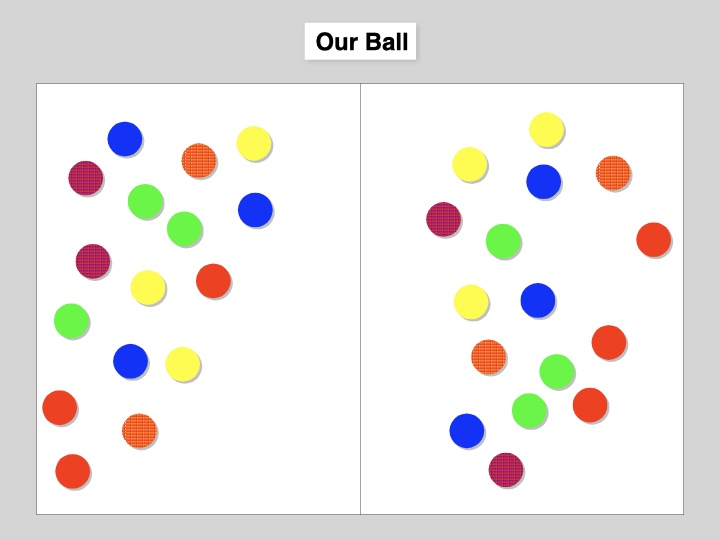
Now lets change the rules again! Each team has players wearing different colored jerseys. Each player throws a ball only to a person wearing the same colored jersey on the other side.
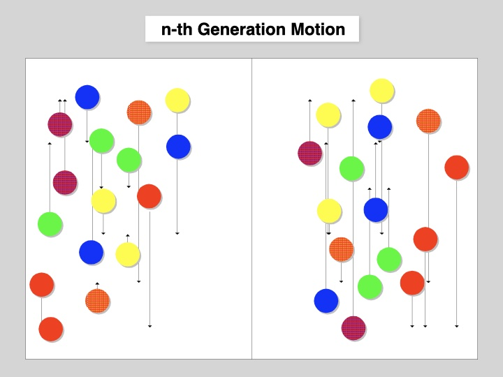
After many throws and many movements, all the players begin to move. After so many moves, the arrows show the sum of their motions.
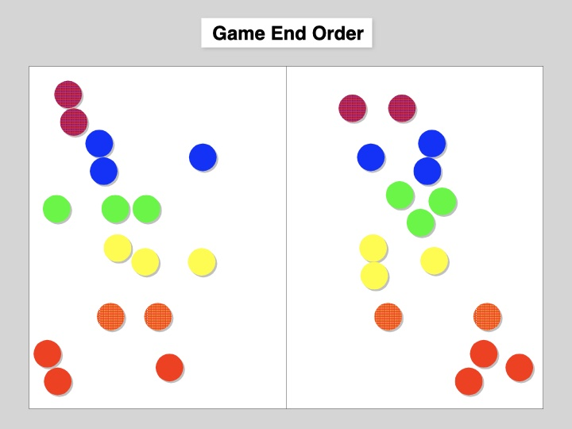
So the players of each team end up sorted by jersey color.
This is a crude example of how to publicly sort individual interests without using a third party--no referees are needed for this game.
So how do you add privacy? Well, one technique is to put up an opaque curtain at the center line that is too tall to see over, but still low enough to throw balls over. For this game, the players will have to throw a colored ball that matches their jersey color. No longer are the balls thrown directly to each player, since they’re no longer in view. So, everyone helps out by catching the ball and then tossing it the nearest team member.
The Team then becomes the trusted group, where all the members know each other’s color. So how do we play a game without trusted groups--or at least where the trusted group consists of only members of the same color.
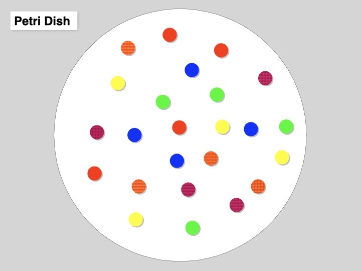
Well, for starters, let’s get rid of the concept of 2 teams--it’s now every one out for der self! Here, the playing field may resemble that of a petri dish. To make the game more interesting, each player wears a pair of goggles that makes them legally blind. They can still catch balls, but they don’t know who threw them. All each player can make out is a general blur of the players that are in their immediate area.
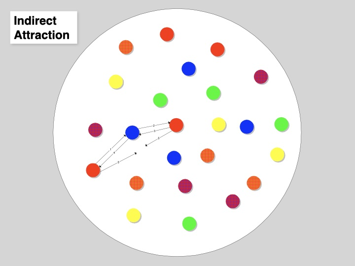
So here, the left-most red player throws a red ball to blue who by chance throws it to middle red player. Middle red sees that the ball matches her color and moves closer to where the ball originated from. Blue can make middle-reds job easier by telling her where the ball came from. Middle-red could encourage left-red to move closer by throwing the ball back to Blue, who by sheer luck throws the ball back to left-red.
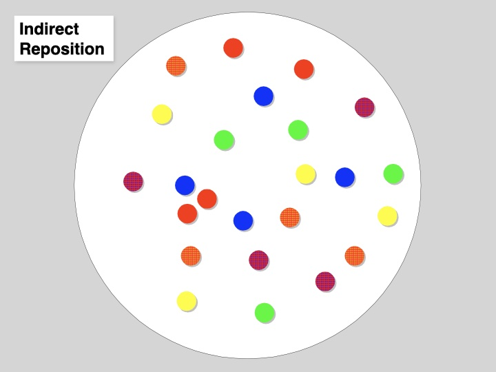
The result is that both reds move close enough to each other to throw the ball directly, next time. Of course, everyone is playing at once...
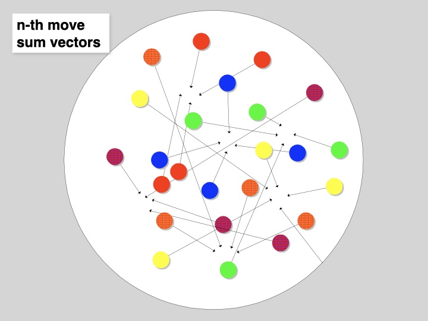
So after many throws back and forth by everyone, the sum value of the motions lead them to move into ...
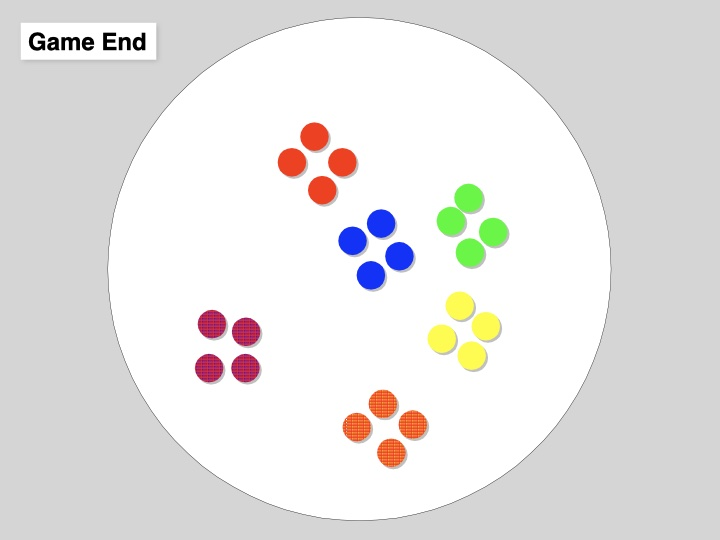
Clusters of their own color. At this point, everyone can take off their goggles to see who else matches their color.
But what if you don’t want others in your group to know who you are? And what prevents cheaters from taking the goggles off?
To find out how, lets move back to the beginning of the game ...
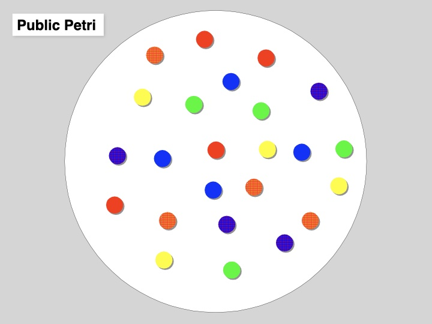
Now, everybody takes off their colored jerseys and done gray ones instead ...
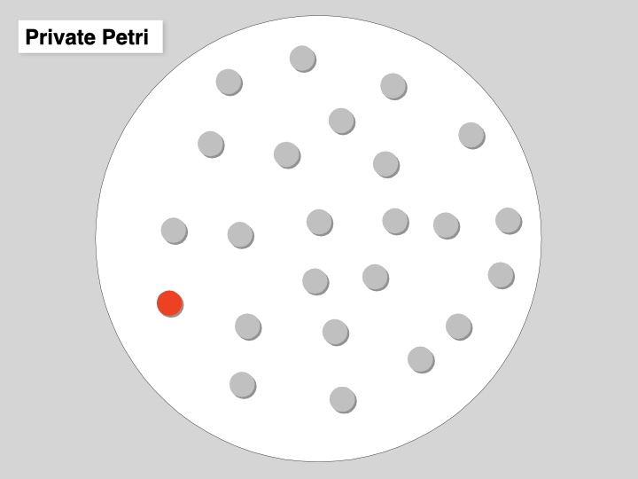
Only you know what color that you represent. To prevent the person that you’re throwing the ball to know what color you are, you gift wrap it.
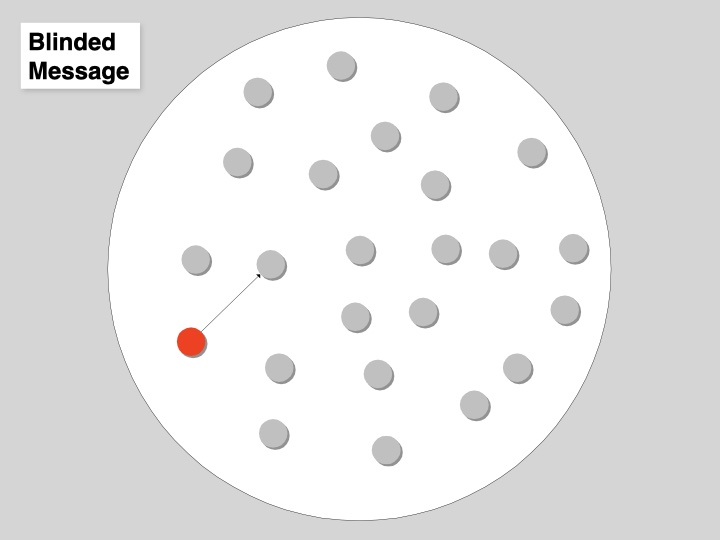
When you throw the ball to someone else, she unwraps it, once. Of course, if you only wrap it once, then she’ll know what color you are. So, you wrap it many times.
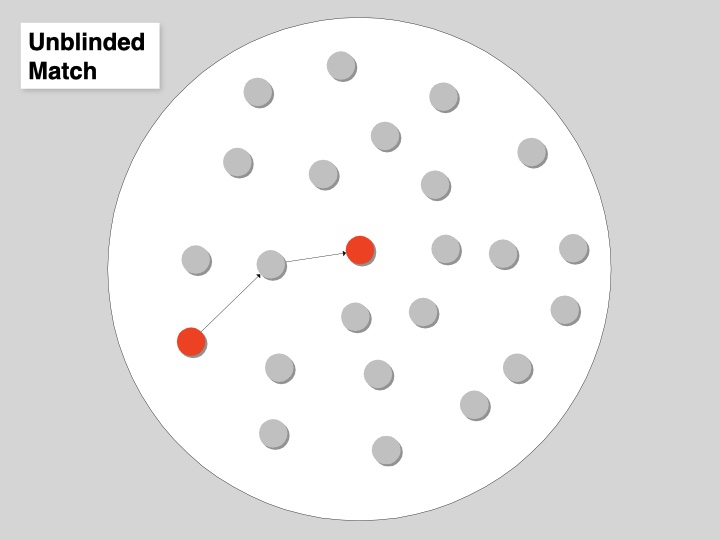
When she throws the ball to the next person, he unwraps it once, as well. If you wrapped it only twice, he’ll see that the color matches his and use the previous player’s hints about where it came from to move closer to the source.
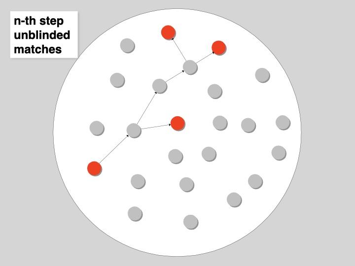
You may wrap the ball many times. In this case, wrapping the ball four times still allows it to be recognized by the other red players while blinding it to the three players who are in between.
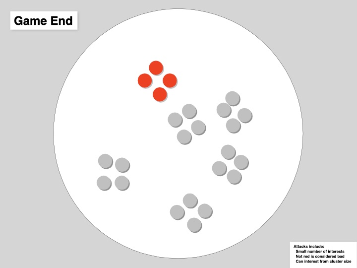
The end result is the same with less opportunity for other colors to cheat in the middle of the game. There still is the problem with who chooses the disclosure --one that is partially solved by replacing the glasses with the masks.
But we’re still faced with the fact that there are recognizable clusters here. If there is a distinction that red is the acceptable color then not being included in that group may be an unwanted disclosure. Another ploy is to fake being red and find out who reveals their self. These types of clustering attacks are reduced when each player can set a threshold before taking off the mask.
How do we prevent cheaters from removing more than one wrapping? This is where a referee comes in--yes, this is trusted 3rd party, but one that has no knowledge of what colors go where. So, the trusted 3rd party becomes a beacon that merely broadcasts when it’s OK unwrap.
(From a cryptographer’s viewpoint, there is where the analogy begins to breakdown, because an attacker can always keep a copy to the ball to collect unwrapping tokens. There are two mitigating factors : first the attacker doesn’t know how many times the ball has been unwrapped before it was thrown to him. Second, the attacker can be prevented from recognizing that color without first being that color. Further details are giving in the section on Homomorphic Encoding trees.
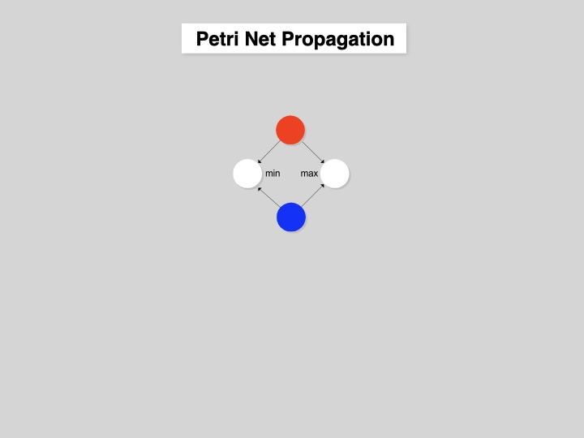
So how does this game map to loosely connected computers on a network? To explain, we need to abstract the model further--so it’s time to move the playing field from the Petri dish to a Petri net. Here the players move from node to node based on some very basic rules: Move one way if my value is greater than someone else's, move another way if my value is less than someone else's. Value, here, represents an arbitrary number assigned to an interest. So, for our example, red is assigned a lower value than blue--(perhaps for the arbitrary reason that engineers prefer blue lasers over red lasers)
In the picture, the left-white node is accepting the minimum of two values while the right-white node is accepting the maximum of two values. So...
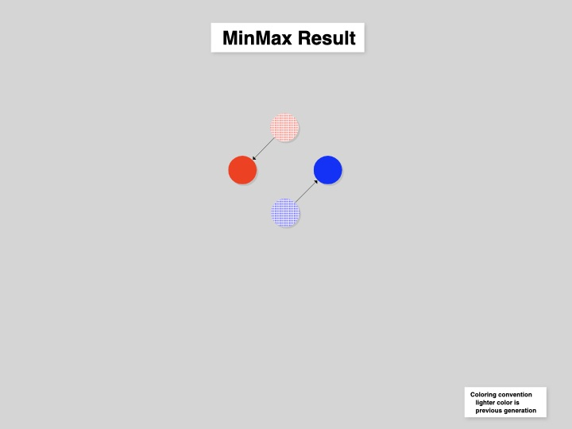
Red moves to the left “min” node and blue move the the right “Max” node--while the position that they used to occupy begins to fade away.
This is fine for two interests, but…
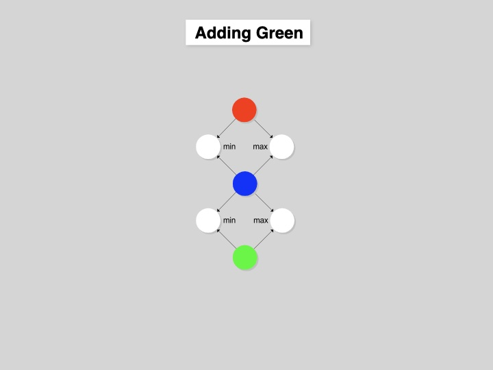
When you add a third color, green, to the mix--and lets say that green’s value is greater than blue but less than red ...
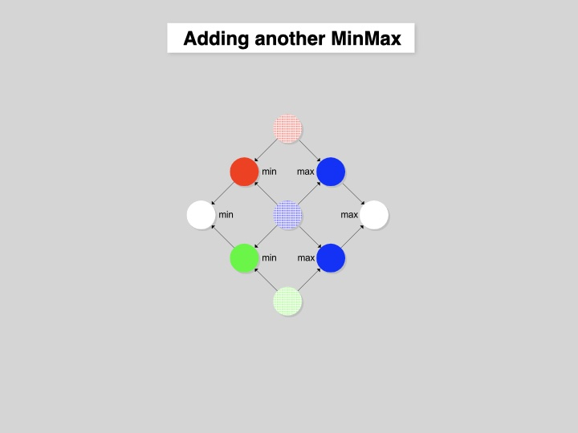
Then the first generation finds red and green moving left and blue moving right. Notice that’s its OK for blue to spit--multiple personalities are allowed here.
To further sort out Min and Max we can add two more nodes to take the result ...
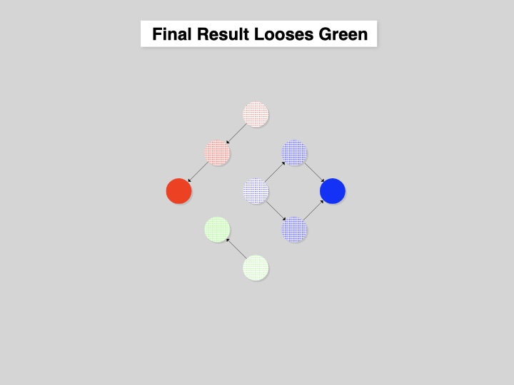
With red being the Min and blue being the Max, just as in the previously shown two color sort. But what happened to green? Well one is that we can recycle the middle node ...
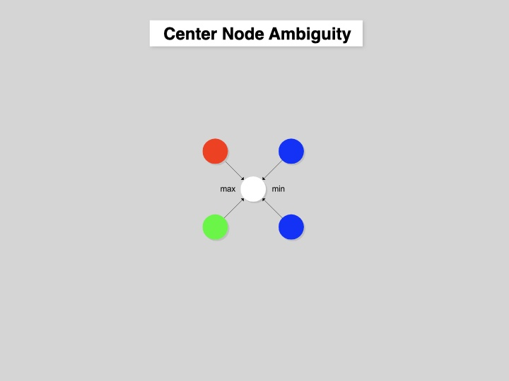
Where red and green are coming in from the left and blue is coming in from the right. To keep the same MinMax convention, the Max of two values are taken in from the left and the min of two values are taken in from the right. So now we have two candidates, green and blue, competing for the same node. What’s a node to do?
Well one could take a vote and blue would win. But what happens is that after many generations, initial majorities begins to dominate and ambiguity of spit personalities rules. So voting doesn’t work.
The best solution is to consider the past...
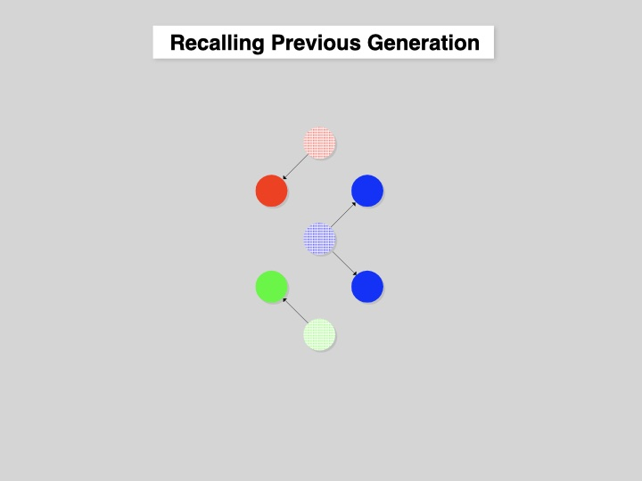
Recall, in the previous generation, that red and green moved left and blue move right. This general angle of motion ...
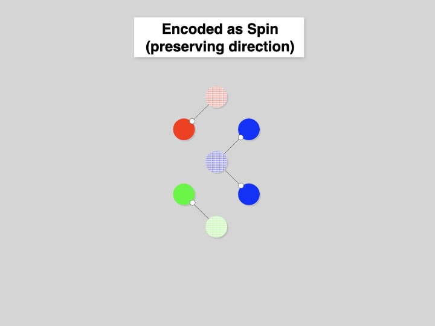
…can be passed along to the next node--let’s call it spin. This is somewhat akin to our multi-player ball game, where the intermediate player calls out where the ball came from.
So, this spin is used in the next generation ...
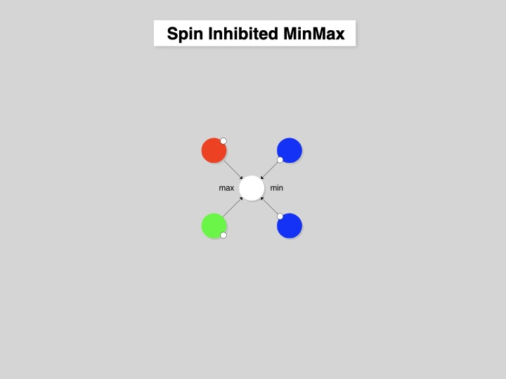
to determine which are the best candidates to occupy a node. The best candidates are the ones which are moving towards a node. The worst are the ones moving away. In this case, both blues are moving away, so green wins ...
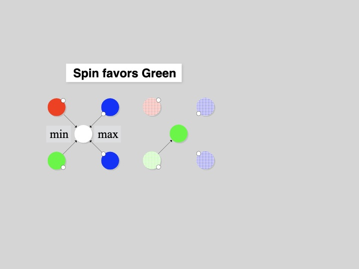
And occupies the coveted center node.
So far we’ve seen three colors sorted in two dimensions, by recycling a center node. Well, I cheated. The recycled node is actually at a different depth. In fact all the nodes are ...
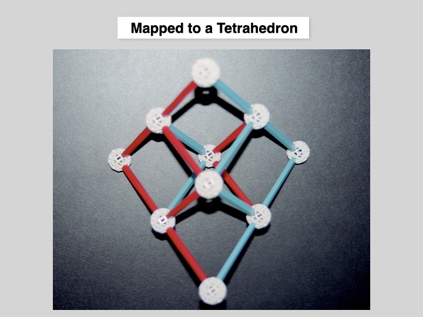
Are at different levels of a tetrahedron. Progressing from one step to the next involves a node moving from one layer to the next in a tetrahedral lattice.
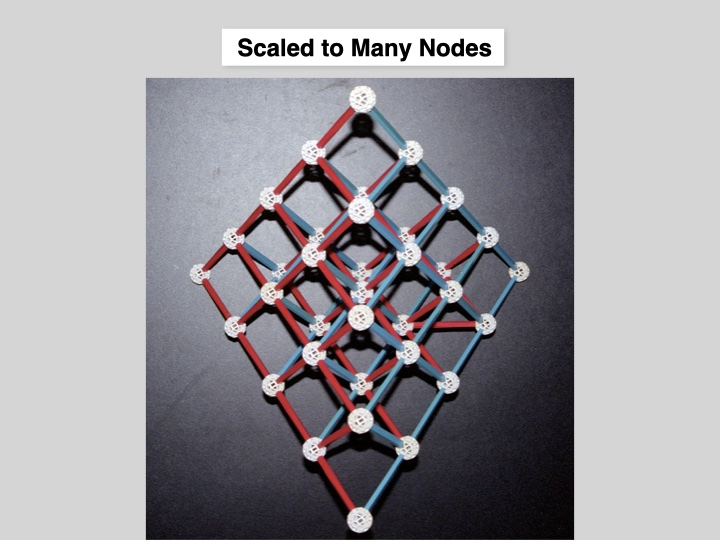
Which can scale to more interests propagating through...
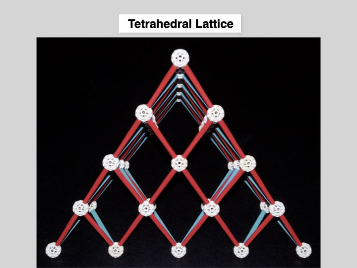
a tetrahedra lattice without lateral connections.
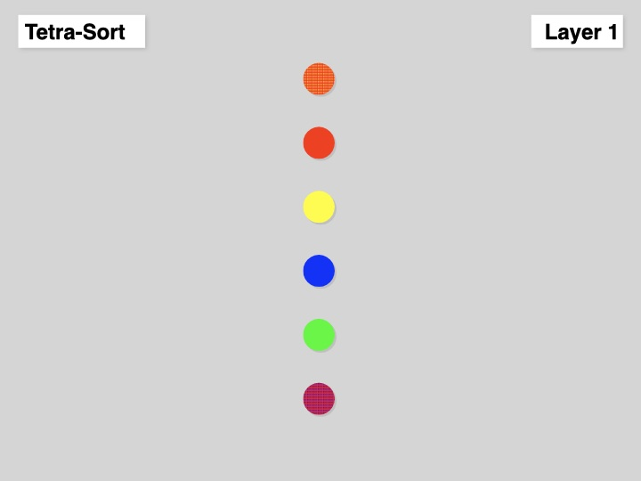
Let’s quickly step through one more example in two dimensions. Here is an unsorted list of colors. (A sorted order would be ROYGBV from the visible color spectrum.)
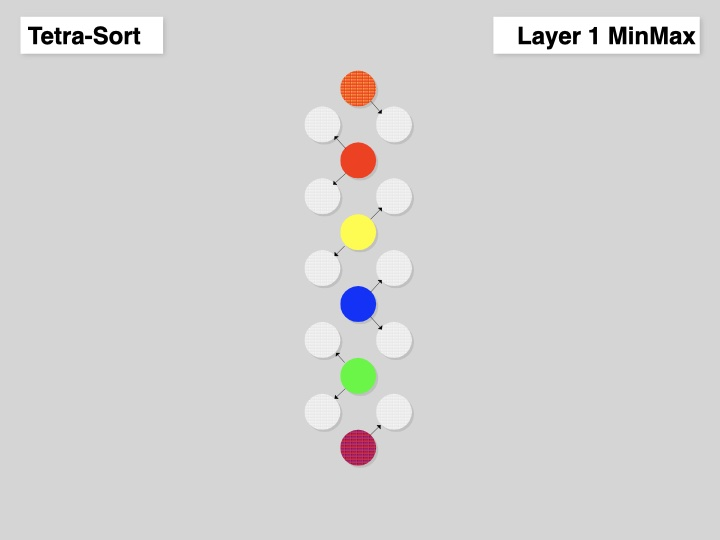
As it progresses down the tetrahedral lattice, the min values move left and the Max vales move right
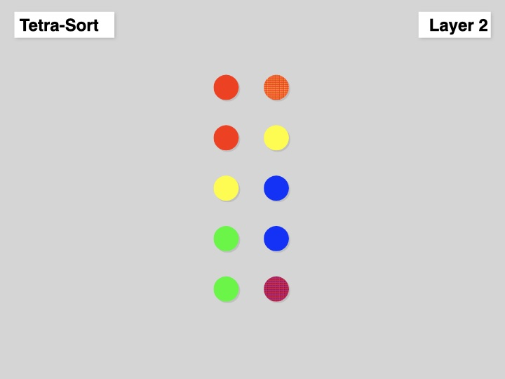
Producing at layer two columns of five rows...
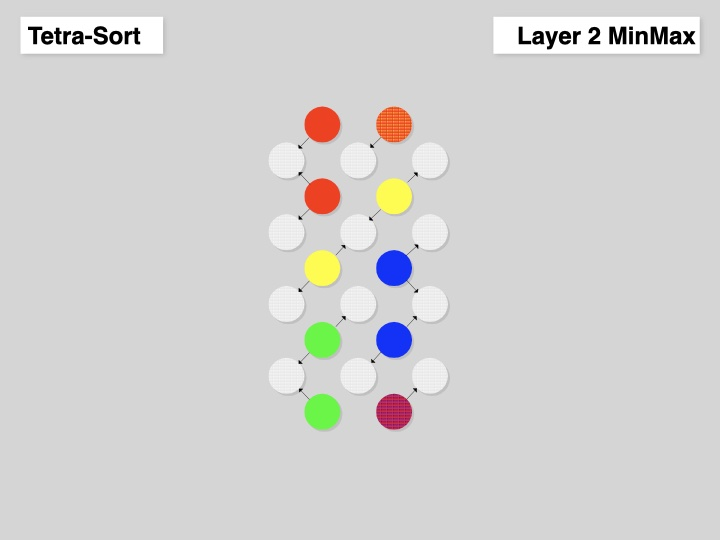
and as it progress to the next layer ...
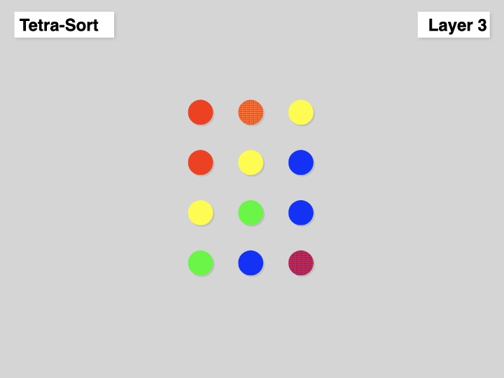
producing 3 columns by 4 rows ...
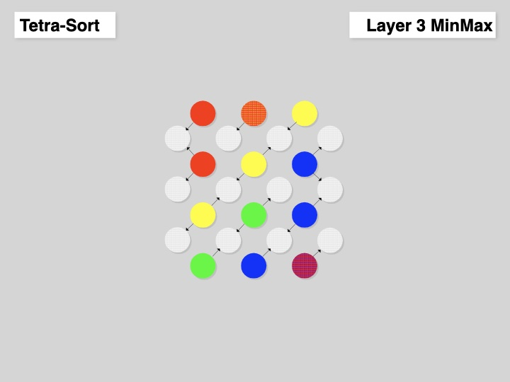
and progressing further ...
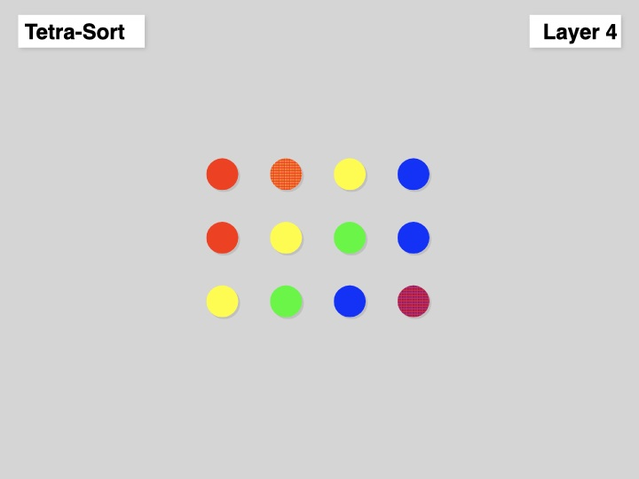
4 columns by three rows ...
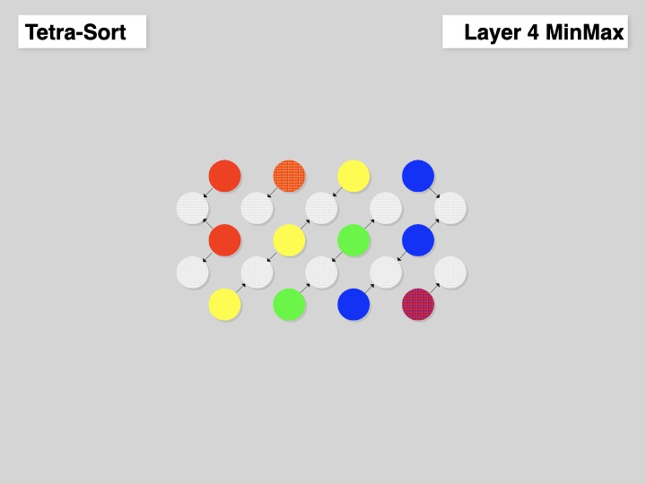
...
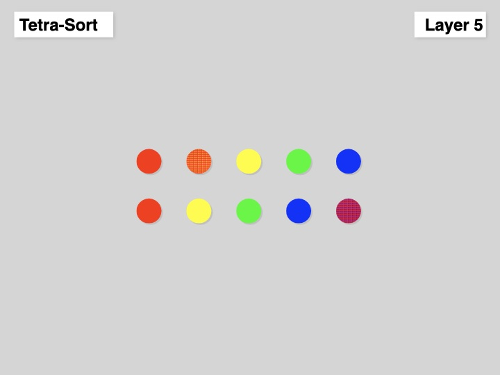
5 by 2
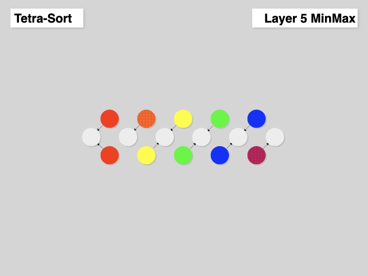
and finally ...
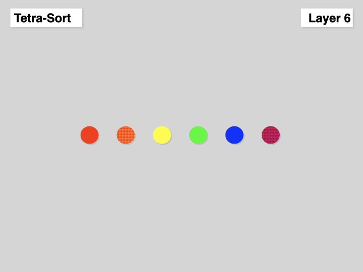
A single row or sorted colors. Sorted purely by negotiating with its peers--no referees needed. No trusted 3rd party required.
<pause>
...
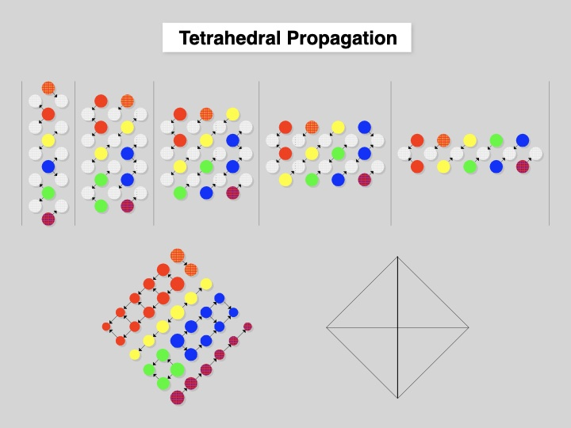
In review of the steps, notice how we start out with a single 2-d column and then squash it down into a single 2-d row, sorting the colors in the process.
To look at this process mapped onto a tetrahedron yields the figure in the lower left--with the final sorted list hidden from view.
Fortunately, the tetrahedron’s depth and the the sorting algorithm's time are two dimensions that easily collapse into one! So this sort can be easily implemented in a 2-D cellular automaton, that looks very similar to the top arrangement, where each cell is looking at it’s four corner neighbors in which to calculate its next state. So cheating is allowed--the hack of recycling nodes, showed in our 3-color example, can become the general rule.
Notice that as a stand-alone sort algorithm, this technique is not very efficient--being a somewhat n-squared sort. Some efficiency is regained back, since the structure remains static--as opposed to say, quicksort where the space-state shifts for each recursion. With a static structure many lists can be sorted at the same time. So, with a 1000 players, sorting a 100 interests should yield (very) roughly the same computation time. Another advantage over n-log-n sorts is that this method doesn’t require a trusted third party to dispatch recursions, nor time costly reconnections to new nodes.
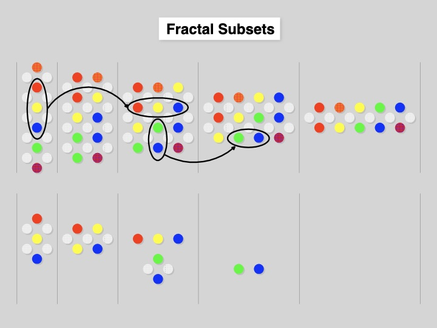
Another advantage is that (under ideal conditions) many subsets of a list can be sorted in a tetrahedron at the same time. (Non-ideal conditions involve interference with other nodes which involves more redundancy.) So, for this example, three nodes in layer1 yields 3 sorted nodes in layer3, two nodes in layer3 yields two sorted nodes in layer4.
Now how do a lot of computers on the net connect and behave like a tetrahedron? ...
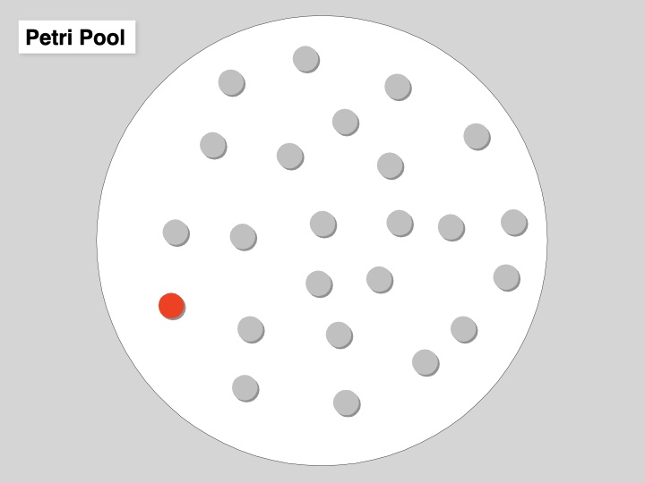
Lets recall our petri dish playing field. Here everybody can listen to everybody else on--for instance--a chat channel (though previous teammates could be asked outside of a pool.
So, one player ...
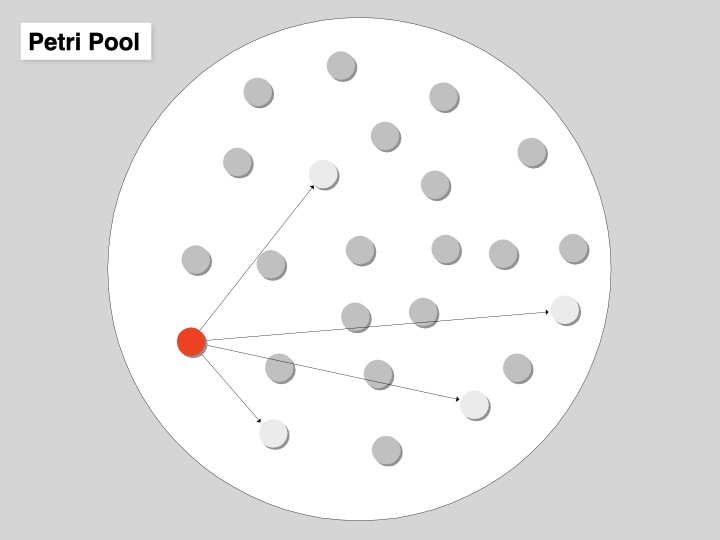
Chooses 4 other players and asks them to form a 5-some.
If they agree ...
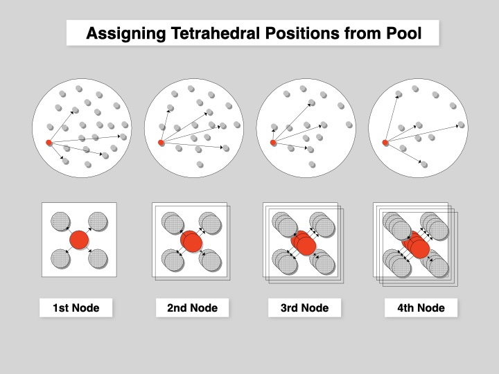
One node is established and four others are removed from red’s pool. This protocol continues until the red player has reached a certain threshold of nodes. (This protocol can turn into a game in its own right. If red asks too many times, the other players may get suspicious and refuse. ) Meanwhile the other players in the pool are forming 5-somas as well, with the end result as a sparsely connected cellular array.
(with the somewhat fractal nature of sorting interests through a tetrahedron, this informal connection will suffice--particularly under if the requirements are less constrained: where an interest may drop out of one session, but won’t drop all for all sessions. )
To eliminate loops, red eliminates other players that’ve asked red to participate, as well.
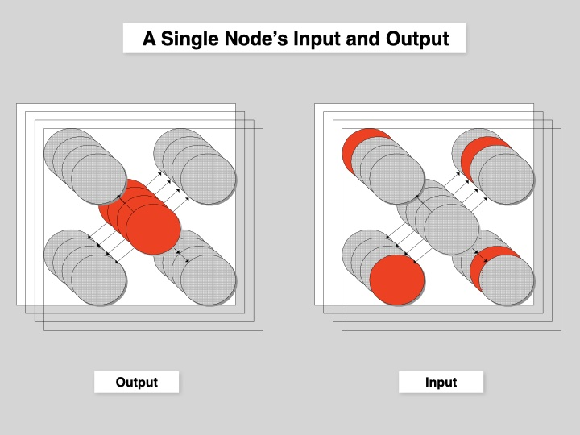
How a sparsely connected cellular array emerges as a correct tetrahedral lattice is best left for another talk. Instead ...
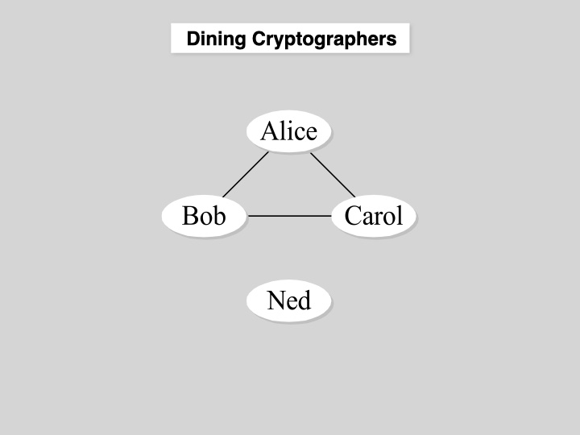
Lets get back to cryptography.
Now that we have a way for interests to self organize into to same proximity. How does an individual broadcast her interests to a group while preserving her privacy? A classic example provided by David Chaum is the Dining Cryptographers problem.
Three cryptographers are dining a restaurant and the waiter announces that someone has paid for the meal: either one of them or Ned, from the NSA. Well all three want to know if it was someone from their group that paid, or if it was Ned.
So Alice and Bob flips a coin behind a menu so that Carol can’t see the results. Likewise Bob and Carol flips a coin that Alice can’t see. And Carol and Alice flip a coin that Bob can’t see. In essence we have three secure channels between Alice, Bob, and Carol. The rule is that if you hadn’t paid for the meal, then you call out matched if the two coins that you see are both head or are both tail--otherwise you call out unmatched. If you did pay, then say the opposite of what you see.
Regardless of how the coins come out, if an odd number of people called matched, then Ned paid. If an even number of people called matched, then someone in the group paid--but the others don’t know who.
So here is way to broadcast interests to a group, with a 3rd party arbitrating the results.
Unfortunately, Alice or Bob can cheat by declaring the opposite of what they see, thus throwing suspicion back onto Ned. Will Carol, who knows that see paid speak up? How serious is this meal, anyway.
Before modifying this protocol to eliminated cheaters, lets first make it a bit more efficient--in fact a bit per channel is all that’s needed.
Strangely enough, flipping a coin in real life is much simpler than ephemeral version. Usually a secure coin flip requires an operation on prime numbers. In this case, we don’t need a secure coin flip. Instead we rely upon the three secure channels.
Here, Alice presents a random bit that only she and Bob sees and Bob presents a random bit that only he and Alice sees. Both Alice and Bob can independently add up these two bits to produce a number that is either even or odd. This maps onto a coin flip as being heads or tails. After tossing some bits towards Carol, the protocol can proceed, as before--by calling out matched or unmatched evens or odds.
So how do we find out if someone cheated? ...
By adding dice and a lot of patience.
This protocol takes many rounds. For each round, each player randomly chooses one of three messages to give: either disclose the truth about their paying or not, forward what the previous player said on the previous round, or choose a random yes or no.
So, in this case, Carol randomly chooses between telling Alice what she knows, forwarding what she got from Bob, on the previous round, or saying a random yes or no. Alice neither knows Who the message comes from nor whether it means anything. But she marks down the answer anyway on a list. The same thing happens between everyone else.
(Since the first round doesn’t have a “previous player said” it would be safer to make that message random as well--in fact, after a few rounds, the random component can be dropped in favor of recycling older messages).
After so many rounds the game is called to halt and everyone tallies up their answers. If someone in the group paid, then the proportion of Yes’s to No’s should approach 5/7...
If nobody paid then the proportion should be 3/9.
Moreover ...
If someone tries to cheat, they produce a proportion that discloses that cheating took place (though not who was the cheating)
So now we have a way of broadcasting values publicly that is verified privately.
The next step is to generalize the broadcast of yes or no to an preset question to the routing of a broad set of interests. In this case, each node decides whether to send information that it owns, or obtained from someone else. So it acts as both a source of its own interests and a cache for other’s interests. The initial random component can be eliminated by filling its cache with random interests.
Now, making a separate decision for two other players can be reduced to a routing decision ...
Moreover, the routing decision can take into account the difference between an interest that it owns and an interest that is contained within its cache.
For Carol, if the value of the cached interest is greater than her interest (value meaning arbitrary number assigned to that interest) then she sends the cached interest (“Theirs”) to Alice and her interest (“Mine”) to Bob. If the value is less than her interest then she sends Mine to Alice and Theirs to Bob.
To prevent Alice or Bob from inferring her interests, Carol can apply a keyed one way function, or MAC, to her decision process. Alice and Bob also apply the same key to their decision making process.
When it’s desirable to synchronize the decision process amongst all the players, then the key can be supplied by a shared Beacon.
Getting back to the restaurant.
Alice, Bob, & Carol decide to determine if Ned paid by throwing dice and by passing out pieces of napkins with Yes or No written on them.
Before the first throw, each player writes Yes or No at random on a dozen or so pieces of napkin and puts the pieces in a cache pile.
For each round, each player writes whether they paid or not on a new piece of napkin. After each throw of the dice, the player calculates who gets a bit of napkin with their answer on it and who gets a bit a napkin from the cache pile. The two bits of napkin zie gets from the other two players gets tossed into the cache pile.
After so many rounds (enough to make the random answers statistically insignificant) the game ends and each player can tally up their own bits of napkin to determine is someone in their group paid.
With only two interests: “I paid” and “I didn’t pay” and knowledge of each player’s routing criteria, it’s easy to infer what direction their preferences flow. For example, if Alice routes her preferences to Bob iff it is less than what’s in her cache, and No is valued less than Yes, then Bob can compare messages sent by Alice with messages sent by Carol to determine which one paid. With more interests and less predictable methods for routing, Bob’s job becomes harder.
(The best defense from a chosen plain text attack is to make the plain text so context sensitive that the attacker needs to become very similar to the attackee. More one that in the section on Homomorphic trees.)
Given that we’re dealing with a much larger set of interests, lets see how to scale secure interest propagation to a larger group.
Instead of continuously sending messages to each other, Alice Bob and Carol can exchange messages with other players ...
When receiving messages, each player performs a standard MinMax comparison--as shown in a Tetra sort
When sending a message, each player compares their message “m” (mine) with a cached message “t” (theirs) to determine whether their interests are output on the left side or the right side.
Thus self interest is interleaved with group interests to produce a distribution of preferences that still aggregate over several rounds.
Now that we have a way to aggregate interests, how does a player set personal disclosure thresholds? As it turns out, disclosure thresholds and arbitrary value assignments enhance each other.
Let’s take a look at thresholds first ...
A simple threshold to set is to encrypt a message with n private keys, at time ti, and then broadcast the public keys at time intervals of ti+1 thru ti+n. If another player is available for that period, she collects enough keys to decipher the message ...
Here, asymmetric keys are replaced with shares in a secret--distributed over time. Another player can decipher red after collecting enough shares. The actual number of shares needed can be determined by the originator of the message.
Now, considering that Red only wants another Red to recognize the message as Red, nothing prevents them from changing what value “Red” represents over time. So, at designated time intervals, all Reds can change their internal value of “Red”, making this particular interest a moving target--and enabling a beacon to be shared by all colors.
Another consequence of allowing an internal value of an interest to shift in time is that it allows the originator to set time frame for disclosing an interest.
In this example, the originator of the message allows three shares of a secret to unblind their interest. Since the internal value of “Red” can shift over time, an attacker is prevented from collecting tokens at sparse intervals--say at ti+1, ti+3, ti+5
Conversely ...
The originator can require that sparsely distributed shares reveal’s their message
With all the possible share distributions mapping onto a lattice that in context of a local session, maps conveniently ...
Along the face of a tetrahedral lattice that can coexist with ...
…propagation of interests.
Now back to value assignment to interests and how they may related to disclosure thresholds ...
One way to represent the content of a set of interests is to encode it into a tree. The simplest is to encode the ASCII letters into a Huffman tree. The most popular letters, such as “e”, “a”, and “o” find their selves at the lower end of the tree, and thus require few bits to encode.
An extension of Huffman trees is to used a pattern recognizer to combine several ASCII letters into a single symbol, such as “hello”. So, a predictive encoding tree may grow over time with the upper most branches formed from the aggregation of branches that occured before (in time, not physically).
Lets abstract this tree into layers of
order of magnitude. So at one layer, we have the letter “o” which may occur quite often, and the next layer is the word “hello” which occurs less frequently (and also contains the letter “o”)
The that we can add another layer ...
The is even less frequent--say a the lyrics from a popular Beatles song. Here is where we move into the realm of individual interests. These interests may be privately held, though may consists of pieces that are public knowledge.
To abstract this notion ...
Let’s symbolize the degree of privacy as the degree of redness. As you progress up the tree, the degree of redness also progresses. The degree of ease of progressing up the tree can be determined by the owner of the tree by enciphering individual branches.
Moreover, each enciphered branch may be ...
deciphered by a varying number of shares of a pooled secret. As you progress up the tree, the number of shares needed to decipher that branch increases. This allows more of the tree to be revealed over time.
So this tree serves as partially blinded message that is propagated...
Whenever a player receives a tree, she compares that tree with her own and ...
…prunes the branches that don’t match. The resulting tree then ...
Forms a value that can be compared and sent along as nodes following a MinMax convention.
Which conveniently map ...
To colored nodes ...
on a tetrahedral lattice ...